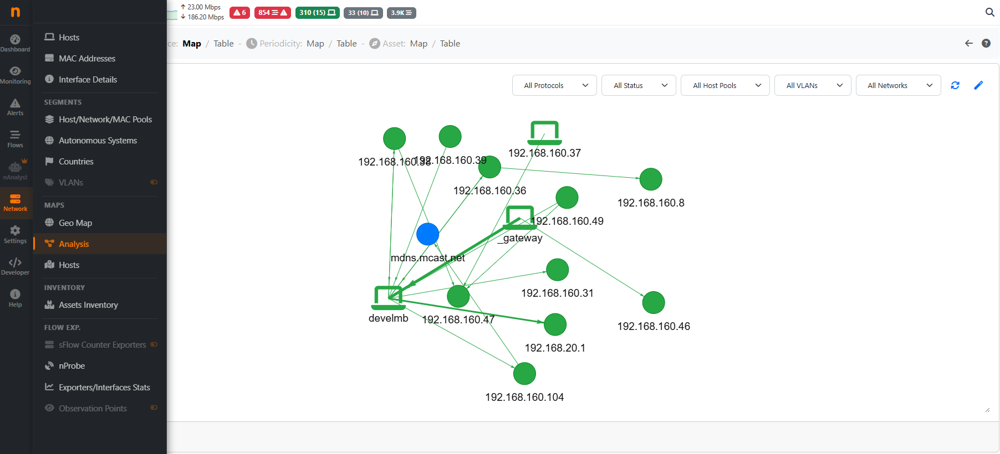

Анализ
Пункт меню «Анализ» открывает карты, которые ntopng изучают на основе потоков (соединений). выбранного интерфейса. Есть две карты, по одной на каждой вкладке:
Карта услуг: службы, используемые в сети (клиент, который общается с сервером через порт с приложением, например. DNS или SSH).
Карта периодичности: обмен данными повторяется через регулярные промежутки времени (например, хост, который обращается к серверу каждые 5 минут).
Каждая карта имеет три вида, которые выбираются с помощью кнопок справа от описания страницы:
График: хосты — это круги, сервисы между ними — линии.
Услуги: таблица услуг.
Рейтинг хостов: хосты ранжированы по важности на карте (сколько сервисов они предлагают или используют).
Примечание
Для карт требуется лицензия Enterprise L и включенный в интерфейсе анализ поведения.
График

Карта услуг
Цвет кружка указывает тип хоста: локальный хост, удаленный хост, многоадресный, широковещательный или MAC. адрес (устройство, видимое без IP-адреса). На карте услуг цвет линии обозначает статус услуги: авторизован, неавторизован или нерешён. Легенда под графиком объясняет цвета.
Щелкните хост, чтобы выделить хосты, с которыми он взаимодействует.
Дважды щелкните хост, чтобы отобразить только его службы: хост будет добавлен в фильтры.
Используйте колесо мыши для масштабирования.
Кнопка «Упорядочить» снова размещает хосты, кнопка «Обновить» снова считывает карту.
На графике показано не более 2500 сервисов: если их больше, воспользуйтесь значком предупреждения. фильтры, чтобы увидеть другие.
Рейтинг услуг и хостингов

Таблица карты услуг
В таблице «Службы» указаны клиент, сервер, порт, приложение, VLAN, сколько сколько раз услуга использовалась (Карта услуг) или наблюдалась, а также ее частота в секундах (Периодичность Карта), когда его видели в первый и последний раз, а также его статус (Карта сервиса).
Нажмите хост, приложение, VLAN или статус, чтобы отфильтровать таблицу по нему.
Нажмите значок стрелки рядом с хостом, чтобы открыть его сведения.
Кнопка действий открывает живые потоки сервиса; его меню открывает исторические потоки (нужно ClickHouse) и для администраторов меняет статус службы Карта обслуживания.
В таблице рейтинга хостов перечислены хосты с указанием их ранга и количества используемых ими услуг. (исходящие ребра) и предложение (входящие ребра).
Фильтры
Обе карты можно фильтровать по локальной сети, пулу хостов, приложению и VLAN. Карта услуг также можно фильтровать по статусу, карту периодичности по направлению (только локально, только удаленно, исходящий или входящий). Фильтры одинаковы во всех трех представлениях. Очистить фильтры удаляет их всех.
Скачать сохраняет данные текущего представления с установленными фильтрами в виде файла JSON.
Статус обслуживания и обучение
В течение периода обучения (установленного в «Настройки» > «Поведение трафика») ntopng обозначает новый услуги со статусом по умолчанию (авторизованный, нерешенный или неавторизованный); после него новый службы получают другой статус по умолчанию. Если Боковое движение оповещение включено, поток несанкционированное обслуживание вызывает предупреждение.
Администраторы могут изменить статус службы из меню ее действий и удалить все услуги, изученные по карте с Удалить службы (под видом): карта затем их изучает опять же от нового трафика.
Более подробная информация: Страница карты услуг, Страница карты периодичности.